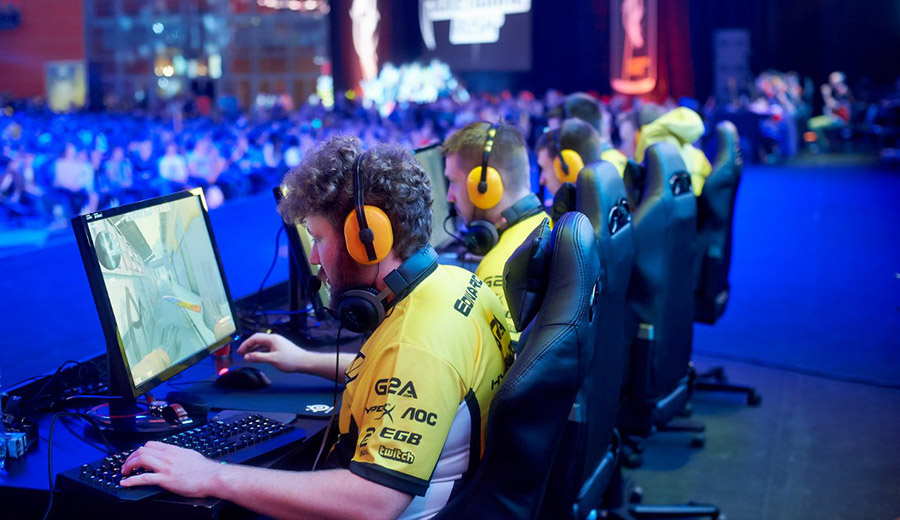

Что такое киберспорт?
Киберспорт — это спорт! Это утверждение является верным с точки зрения законодательства
Российской Федерации.
Приказ Министерства спорта Российской Федерации от 29.04.2016 является
тому подтверждением. Несмотря на этот неоспоримый факт, на фоне растущей популярности киберспорта в
стране начали появляться высказывания известных личностей относительно того, что признание этого явления
спортом, мягкого говоря, ошибочно.
Сами по себе компьютерные игры — это всего лишь на всего развлечение и один из способов проведения досуга.
Данный вид досуга не спроста считается не самым продуктивным с точки зрения полезности.

Согласно уставу Общероссийской общественной организации «Федерация компьютерного спорта России» (ФКС России) киберспорт – (компьютерный спорт, е-спорт, электронный спорт
(англ. cybersport, e-Sport, electronic sport) — вид соревновательной деятельности и специальной практики подготовки к соревнованиям на основе компьютерных и/или видеоигр,
где игра предоставляет среду взаимодействия объектов управления, обеспечивая равные условия состязаний человека с человеком или команды с командой. Т.е. киберспорт это набор
интеллектуальных дисциплин, соревнования по которым проходят в виртуальном пространстве.
Вы сможете однозначно ответить на вопрос: «Киберспорт – это профессия или хобби?», если узнаете, сколько тренируются участники команд.
Нужно отточить реакции, изучить каждую мелочь, каждую деталь карты и суметь войти в полное взаимодействие с другими пользователями.
Профессиональные игроки проводят за компьютером по 8-12 часов в день, у них есть тренеры – специалисты, вырабатывающие стратегии и тренирующие дисциплину и реакцию.
Неудивительно, что спортсмены зарабатывают достойно, ведь киберспорт – это сложный процесс!
«Киберспорт — это точно такой же вид спорта, как и любой другой, который называют традиционным. Это не соревнование человека с компьютером, это соревнование двух
людей или команд, интеллектуальное состязание, в котором компьютер выступает в качестве спортивного инвентаря или турнирной площадки», - говорит он. Также Смит подчеркнул,
что далеко не все игры имеют отношение к компьютерному спорту - для этого игра должна обладать соревновательным элементом, быть короткосессионной, бессюжетной и обеспечивать
равные условия для соревнующихся игроков. Поэтому в киберспорте соревнования проводятся примерно по 20 играм из сотен тысяч или даже миллионов существующих.
«Профессиональные киберспортсмены, соревнующиеся на мировом уровне, обязательно уделяют внимание своей физической форме. Победу от поражения может отделять миллисекунда,
всё решают реакция и скорость мышления спортсмена, а высокого уровня этих параметров нельзя достичь без хорошего физического состояния и подготовки», — рассказал
«Парламентской газете» генеральный менеджер известной российской киберспортивной команды Virtus.pro Роман Дворянкин. Киберспорт, соглашается он, это не тяжёлая атлетика
или бег с препятствиями, но особых различий между ним и такими давно признанными видами спорта, как, например, шахматы или стрельба из лука, нет. Что касается психологического
аспекта, то различия и вовсе отсутствуют. Киберспортсмены так же нацелены на победу, у них в наличии то, что называется спортивным духом, и, как любой другой вид спорта,
киберспорт находится вне политики.
Новости киберспорта
- -League of Legends: победа T1 на Worlds 2023, новый герой и другое
- -Team Spirit стала двукратным чемпионом The International
- -ActiBlizz отказывается от одной из самых амбициозных затей в своей истории — Overwatch League